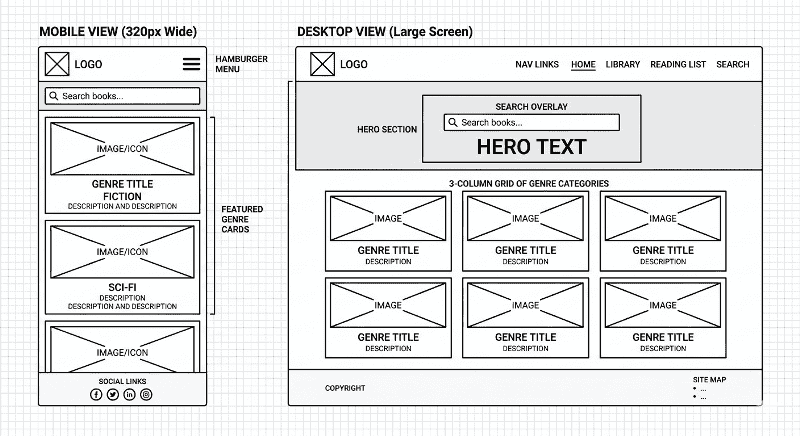

Site Name
Name: LibriLog
Reasoning: "Libri" is Latin for books, and "Log" suggests a tracking or journaling system. It is short, memorable, and sounds professional for a digital library tool.
Site Purpose
LibriLog serves as a personal digital sanctuary for readers. It allows users to explore new genres, view detailed book metadata via interactive modals, and maintain a persistent "To-Read" list using local storage. The goal is to bridge the gap between discovery and organization.
Scenarios
- "I found an interesting sci-fi book; where can I see a summary and its publication date without leaving the main gallery?"
- "How do I save a list of books I want to read later so they are still there when I refresh the page?"
Color Schema
Primary: Carbon Black (#1D201F)
Secondary: Carrot Orange (#E67E22)
Accent: Snow (#FBF5F3)
Typography
Headings: Play (sans-serif)
Body: Roboto (Sans-Serif)
Wireframe
